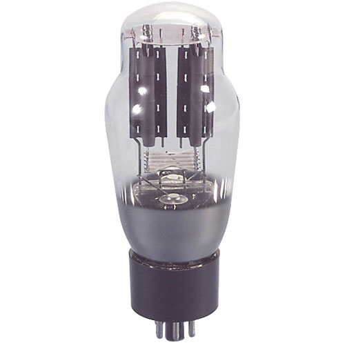
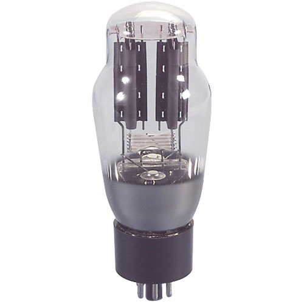
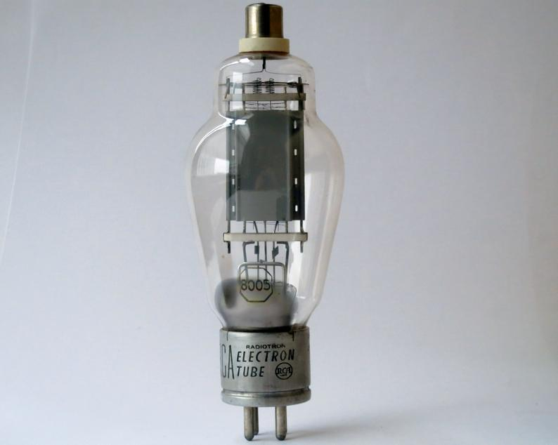
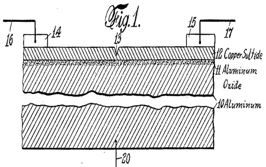
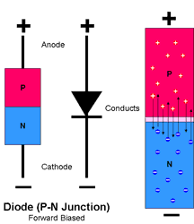
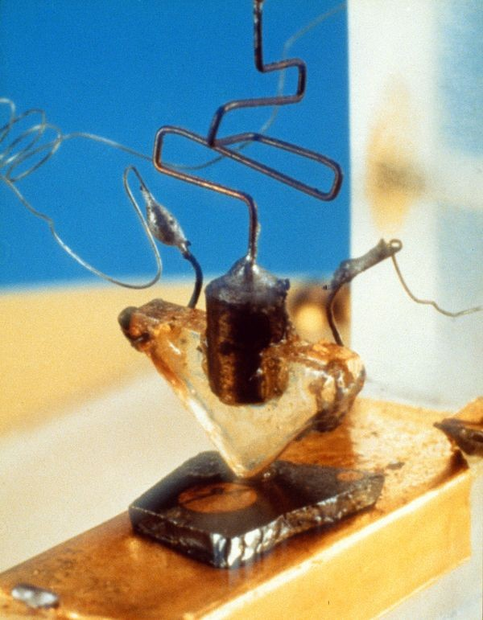
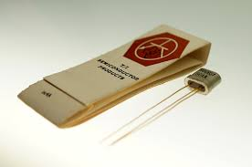
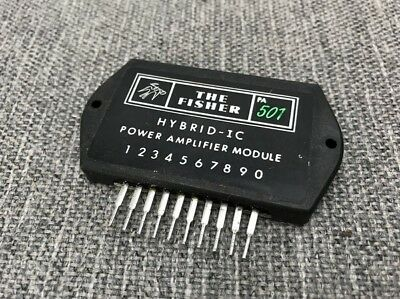
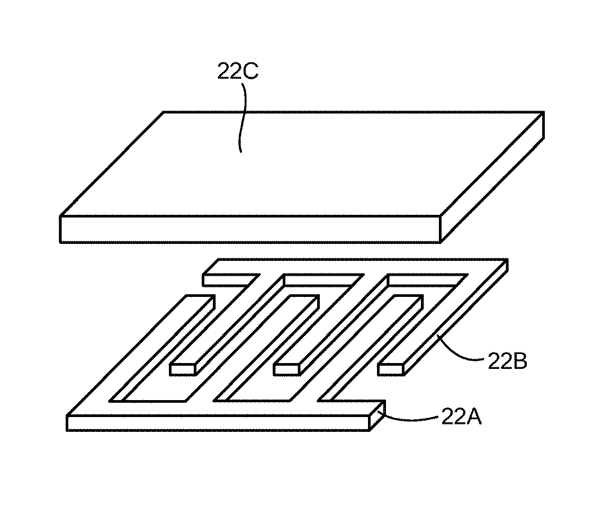
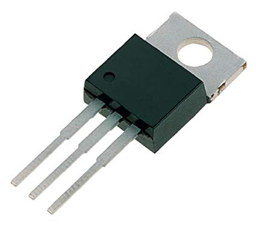

1904
Vacuum Tube
A typical vacuum tube rectifier, https://steemit.com/technology/@proteus-h/how-a-vacuum-tube-rectifier-works
Vacuum Tube
A typical vacuum tube rectifier, https://steemit.com/technology/@proteus-h/how-a-vacuum-tube-rectifier-works
Triode
https://picclick.com/Good-UV202-Brass-Base-Tipped-Triode-Vacuum-Tube-163985191899.html
Transistor Idea
Lilienfeld’s field-effect transistor, https://www.theregister.co.uk/Print/2012/12/14/feature_the_transistor_is_65_years_old/
P-N Junction
http://www.circuitstoday.com/pn-junction-diode-characteristics
First Produced Transistor
The First Transistor, https://www.computerhistory.org/revolution/digital-logic/12/273
Silicon Transistors
TI 904 Si transistor, http://spingalhistory.blogspot.com/2017/02/the-first-silicon-transistors.html
Hybrid IC
https://picclick.com/Fisher-PA-501-Hybrid-IC-Power-Amp-Module-182893217004.html
Unitary IC
https://patents.patsnap.com/v/US10050320-integrated-circuit-with-shared-electrode-energy-storage-devices.html
MOSFET
https://www.amazon.com/IRF510PBF-IRF510-Power-N-Channel-transistor/dp/B00I6IAGCA